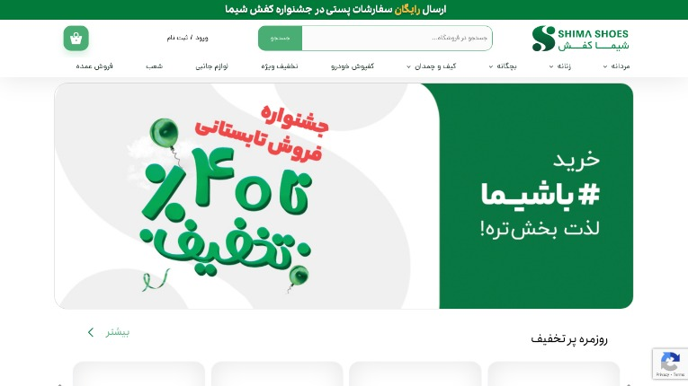
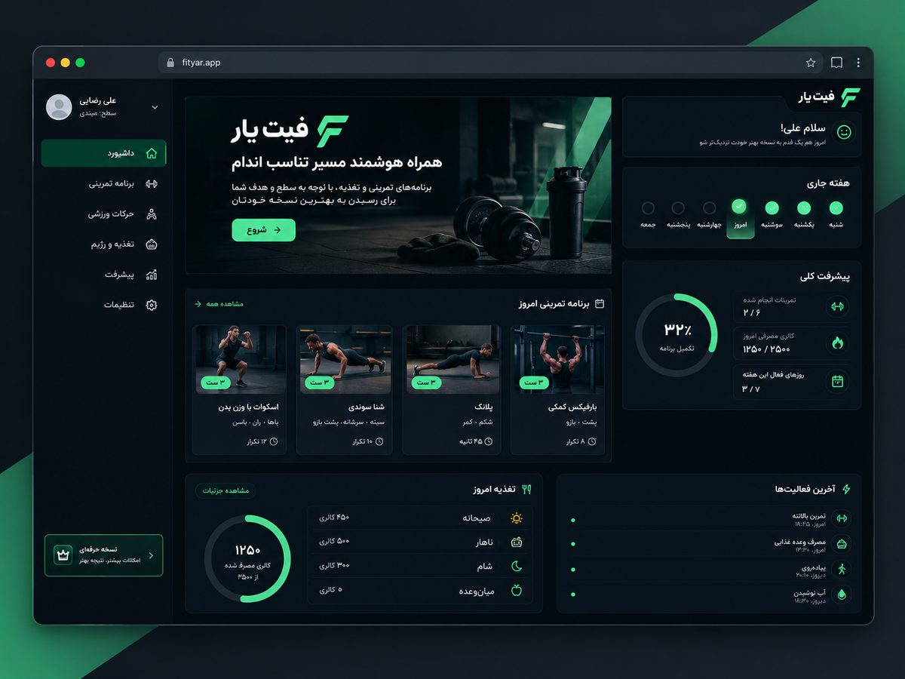
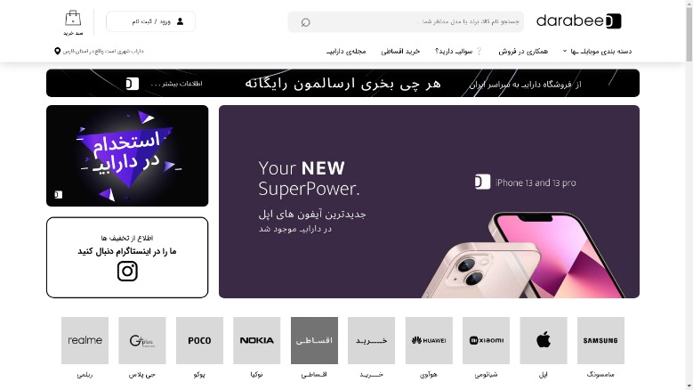
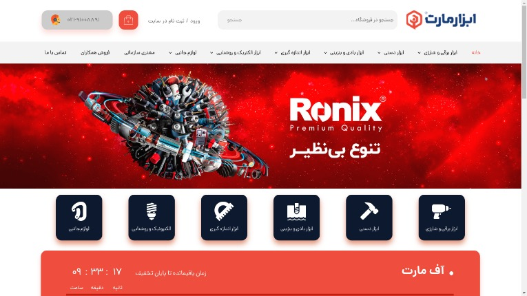

وبسایت شخصی من
جواد حسینی
آنچه میبینی، تمام من نیست.
دانشآموز رشته کامپیوتر و شبکه؛ علاقهمند به دنیای تکنولوژی، طراحی و ساختن ایدهها.

01 / JH
CREATIVE MIND · DIGITAL WORLD
EST.
2008
2008
اسکرول کن ↓
01
کمی درباره من
همیشه به ساختن چیزهایی علاقه داشتم که هم کاربردی باشند، هم ظاهر خوبی داشته باشند.
سلام، من جواد حسینی هستم؛ ۱۸ ساله و از شهرستان محلات. در رشته کامپیوتر و شبکه تحصیل میکنم و به دنیای طراحی، کارهای گرافیکی و تکنولوژی علاقه دارم.
این صفحه گوشهای از علایق، مهارتها و کارهای من است؛ فضایی شخصی برای معرفی خودم و چیزهایی که دوست دارم یاد بگیرم و خلق کنم.
۰۱ایدهپردازی
۰۲یادگیری
۰۳خلق کردن
02
چیزهایی که بلدم
01
HTML
ساختار صفحات وب
02
CSS
طراحی و استایل وب
03
Photoshop
طراحی و ویرایش گرافیکی
04
Premiere
تدوین ویدئو
05
Typing
تایپ و آمادهسازی متن
03
منتخبی از کارها
چند نمونه از تصاویر و کارهایی که در نسخه قبلی سایت قرار داشتند.




04
قابهایی از من
چند لحظه و تصویر شخصی؛ ساده و بدون توضیح اضافه.
05
در ارتباط باشیم
LET'S CONNECT